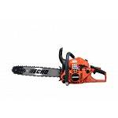
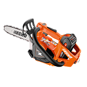
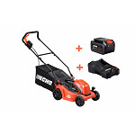
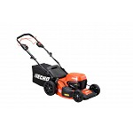
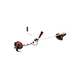
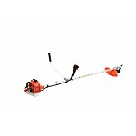

Informação de Compras
Aqui encontra as condições gerais para compra de equipamentos e serviços na oficina Joaquim Luís Simões.
- Pagamentos em numerário, MBWay ou transferência bancária.
- Encomendas levantadas em loja ou envio por transportadora (sob consulta).
- Garantia mínima de 2 anos em todos os equipamentos novos.
- Serviços de oficina faturados após verificação e aprovação do orçamento.
Processo de Encomenda
Gama Relacionada: Moto-serras Disponíveis
Modelos adicionais em stock ajustados para diferentes intensidades de corte florestal e agrícola.

Motosserra DCS-3500T + PACK BATERIA 2,5AH E CARREGADOR
A ECHO DCS-3500T é uma motosserra a bateria desenvolvida para profissionais que procuram máximo desempenho.
989,00€ Encomendar
Motosserra DCS-3000T + PACK BATERIA 2,5Ah E CARREGADOR
A ECHO DCS-3000T representa a nova geração de motosserras a bateria para poda, combinando tecnologia avançada, potência superior e controlo total para os profissionais de arboricultura.
669,01€ Encomendar
Motosserra DCS-3500T
A ECHO DCS-3500T é uma motosserra a bateria desenvolvida para profissionais que procuram máximo desempenho.
619,00€ Encomendar
Motosserra DCS-3000T
A ECHO DCS-3000T representa a nova geração de motosserras a bateria para poda, combinando tecnologia avançada, potência superior e controlo total para os profissionais de arboricultura.
319,00€ Encomendar
Motosserra CS-3410ES
Chassis robusto de alta cilindrada para trabalhos florestais duros.
349,00€ Encomendar


Motoserra CS-7310sx
Sistema de arranque fácil com mola, ideal para utilizadores ocasionais.
1199,00€ Encomendar

Motoserra CS-4310sx
Componentes internos em liga de magnésio de alta durabilidade.
799,00€ EncomendarGama Relacionada: Corta-relvas Disponíveis
Modelos adicionais manuais, elétricos, térmicos ou robóticos para manter o relvado impecável.

Corta-Relva DLM-5100SP+ PACK BATERIA 5Ah E CARREGADOR
A ECHO DLM-5100SP é a corta-relva concebida para quem exige resultados profissionais em qualquer tipo de terreno.
1139,00€ Encomendar
Corta-Relva DLM-310/46SP + PACK BATERIA 4Ah E CARREGADOR
Se queres cortar relvados de forma eficiente, sem esforço e com resultados profissionais, o ECHO DLM-310/46SP é a solução ideal.
779,00€ Encomendar
Corta-Relva DLM-310/46SP + PACK BATERIA 2Ah E CARREGADOR
Para quem quer resultados profissionais sem o incómodo dos cabos ou do combustível, o ECHO DLM-310/46P é a escolha ideal.
729,00€ Encomendar
Corta-relva Gasolina Start
Motor a quatro tempos fiável para superfícies sem acesso a eletricidade.
629,00€ Encomendar
Corta-Relva DLM-310/46P + PACK BATERIA 2Ah E CARREGADOR
Para quem quer resultados profissionais sem o incómodo dos cabos ou do combustível, o ECHO DLM-310/46P é a escolha ideal.
579,00€ Encomendar
Corta-Relva DLM-310/35P + PACK BATERIA 4Ah E CARREGADOR
Com o ECHO DLM-310/35P, cortar a relva do seu jardim deixa de ser um sacrifício. Este modelo integra-se na linha Garden+, combinando desempenho e usabilidade.
499,00€ Encomendar
Corta-Relva DLM-310/35P + PACK BATERIA 2Ah E CARREGADOR
Com o ECHO DLM-310/35P, cortar a relva do seu jardim deixa de ser um sacrifício. Este modelo integra-se na linha Garden+, combinando desempenho e usabilidade. .
449,00€ Encomendar
Corta-Relva DLM-5100SP
A ECHO DLM-5100SP é a corta-relva concebida para quem exige resultados profissionais em qualquer tipo de terreno.
749,00€ Encomendar
Corta-Relva DLM-310/46SP
O seu espaço. A sua paixão. A sua transformação. A série ECHO Garden+ dá-lhe os produtos que precisa para trasnformar o seu espaço exterior em algo maravilhoso.
529,00€ Encomendar
Corta-Relva DLM-310/46P
O seu espaço. A sua paixão. A sua transformação. A série ECHO Garden+ dá-lhe os produtos que precisa para trasnformar o seu espaço exterior em algo maravilhoso.
579,00€ EncomendarGama Relacionada: Roçadoras Disponíveis
Modelos adicionais indicados para cortes de cantos, ervas densas, silvados ou limpeza de valas.

Roçador SRM-301TES/U
Aparador ergonómico ideal para contornos de canteiros e calçadas.
519,00€ Encomendar
Roçador SRM-420ES-LW
Leveza estrutural absoluta sem emissão de gases ou ruídos de motor.
669,01€ Encomendar

Roçador SRM-520ES
Kit multifunções: roçadora, podadora de altura e corta-sebes alto.
1059,00€ Encomendar
Roçador SRM-3021TES/U
Elevado poder de arranque e rotação estável para uso contínuo.
678,99€ Encomendar
Roçador SRM-420ES
Fixação com mochila ergonómica traseira, ideal para encostas íngremes.
889,00€ Encomendar
Roçador SRM-3611T/U
Cabeça de fio de nylon com avanço por batida no solo automático.
739,00€ Encomendar
Roçador SRM-3611T/L
Desenvolvida para cortar pequenos arbustos e ramagens densas lenhosas.
678,99 € Encomendar
Roçador SRM-222ES/U
Inclui disco metálico dentado de alta resistência a impactos de pedras.
359,00€ Encomendar
Roçador SRM-222ES/L
Guiador duplo simétrico ajustável para distribuição correta do peso lombar.
319,00€ Encomendar💡 Informação de Navegação: Para ver os 10 modelos complementares em exposição nesta secção, escolha e clique em "Fazer Encomenda" num dos artigos principais da nossa Loja.